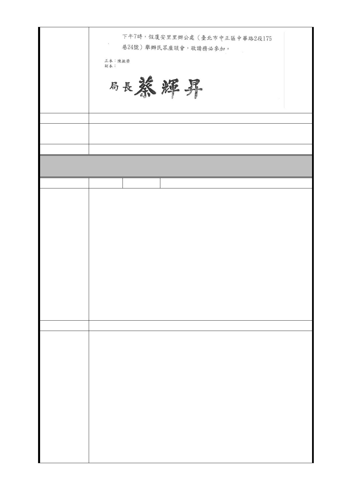

建議辦法
市府回應
意見
（103 年 10 月 23 日第 664 次委員會議提供委員審議參考）
委員會決議 同編號交一－1 委員會決議。
LG04 車站
編 號 捷七-1 陳情人 林○芬
LG04 出入口捷七 B 範圍內禁建都沒通知，貴局也太壓霸了。
100 年 12 月 2 日、12 月 7 日兩次說明會，都說的不清不楚
，動不動就說貴局不能作主，就拿法條來壓地主，還要地主
建議，不表達就代表接受或棄權，貴局把我們地主的時間當
甚麼？
雖然我的房子老舊，可座落在臺北市，貴局以為臺北市的土
陳 情 理 由 地與房子那麼容易取得，可別瞧不起人。只要 LG04 捷八出入
口遷移，那捷七 B 出入口也要遷移，代表貴局給的補償條例
實在太差了，也是最爛的回饋，當捷運出入口建在我們的土
地上，一樓店面沒了，地下樓層也沒了，為什麼我們地主要
被犧牲？所有的好處全都被貴局與建商拿走，我們地主到底
能擁有甚麼樣的好處呢？請貴局告訴我們地主。重視我們地
主的權益。
建議辦法
1.本府捷運工程局為配合萬大線（臺北市段）各場站設施所
須之捷運工程用地辦理變更都市計畫作業，基於維護相關土
地所有權人與建物所有權人之權益，本府捷運工程局於本府
都市發展局辦理都市計畫變更案公展說明會之前先行於 100
年 11 月 25 日、29 日、30 日及舉辦 4 場說明會邀請土地及
市府回應
意見
建物所有權人出席，並於本府都市發展局辦理之中正區及萬
華區公展說明會時再一次通知上述所有權人出席，上述 6 場
說明會本府捷運工程局係依各車站相關用地之土地登記謄本
於 99 年 7 月前記載之地址採逐一以送達證書郵寄方式通知
出席。
2.有關東園街附近居民透過民意代表要求捷運出口設於臺北
市立圖書館東園分館附近一項，本府捷運工程局曾於 100 年
3 月邀集本府消防局、警察局萬華分局、教育局及東園國民
- 121 -